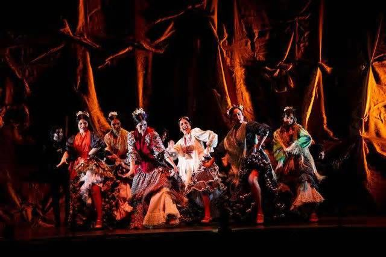

El Ballet Flamenco de Andalucía presenta 'Flamenco Patrimonio' en el Gran Teatro de Córdoba

CÓRDOBA, 19 (EUROPA PRESS) El Ballet Flamenco de Andalucía (BFA), dependiente de la Consejería de Cultura, Patrimonio Histórico y Deporte, presentará el próximo sábado 21 de noviembre en el Gran Teatr ...
CÓRDOBA, 19 (EUROPA PRESS) El Ballet Flamenco de Andalucía (BFA), dependiente de la Consejería de Cultura, Patrimonio Histórico y Deporte, presentará el próximo sábado 21 de noviembre en el Gran Teatr ...
Noticia publicada por Europa Press on MSN. Consulta el artículo original en Europa Press on MSN para más información.